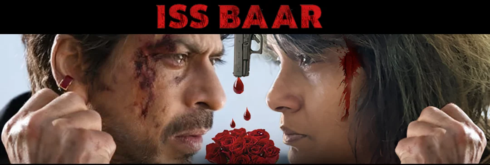
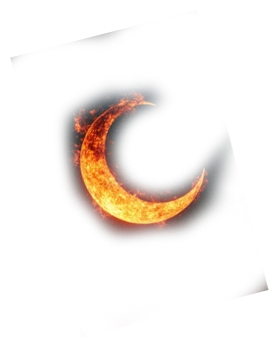
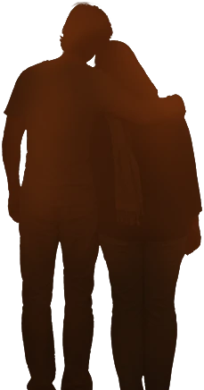

Iss baar dil mein aag lagi hainIss baar zehan se zeher ugli hainIss baar ghar ke bhedi ki baadh nikli hainIss baar King ki duhaai beshumaar lagi hain
Iss baarIss baar
Iss baar duniya sirf jalegi nahinIss baar Valmiki ki kahaani rachegi nahinIss baar Dev Asur ki ladaai chhidegi nahinIss baar Kaikeyi, Sita ki chalegi nahin
Iss baarIss baar
Iss baar koi hiran phudkegi nahinIss baar koi rekha khinchegi nahinIss baar koi Garuda ki aahuti milegi nahinIss baar koi Sanatan ki paribhasha bunegi nahin
Iss baarIss baar
Iss baar Kumbhakaran neend se soyega nahinIss baar Shabari ke shraap ka qarz chukega nahinIss baar Hanuman kahin bhi jhukega nahinIss baar Dashrath ki reedh haddi tootegi nahin
Iss baarIss baar
Iss baar Shurpanakha ki naak kategi nahinIss baar Chalisa ki gutthi suljhegi nahinIss baar Lanka ek poonchh se dahegi nahinIss baar Dussehra ki lapatein bujhegi nahin
Iss baarIss baar
Iss baar Ayodhya ki bhoomi chamkegi nahinIss baar naabhi se amrit dhaara niklegi nahinIss baar Ram se Raavan ki daastaan janegi nahinIss baar khoon ki pyaas bujhegi nahin
Iss baarIss baar
Iss baar setu yuddh ki raah banega nahinIss baar maryaada ki aad mein raas leela jhulsegi nahin
Iss baar King Buddh bankar bhiksha nahin maangegaIss baar King ka taandav jwaalamukhi dariya banega
Iss baar King ka muqaddar sirf anth yug laayegaIss baar King khud duniya ka janani bann ke jaayega
